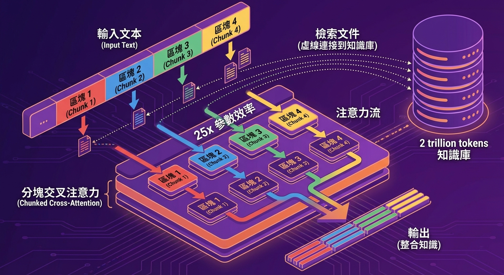

💡 一句話總結
RETRO 使用 2 兆 token 的檢索資料庫，讓 7.5B 參數的模型達到 GPT-3 175B 的水準！
證明檢索可以大幅提升參數效率，用更少的參數獲得更好的效果。
📄 Abstract (摘要)
📄 論文原文
"Large language models have been shown to memorize a vast amount of knowledge during pretraining, including information that is unlikely to appear in their training data more than once. We investigate improving language models by retrieving from a large corpus of documents at inference time. We introduce the Retrieval-Enhanced Transformer (RETRO), a language model that conditions on large-scale document chunks retrieved based on local similarity with preceding tokens."
翻譯：大型語言模型已被證明在預訓練期間記憶了大量知識，包括不太可能在訓練資料中出現超過一次的資訊。我們研究透過在推理時從大型文檔語料庫中檢索來改進語言模型。我們引入了檢索增強 Transformer（RETRO），這是一個基於與前面 token 的局部相似性檢索大規模文檔塊的語言模型。
🔍 核心洞察
RETRO 的關鍵發現：
- 模型會記憶罕見資訊：即使只出現一次，模型也會記住
- 記憶效率低：把這些資訊存在參數裡很浪費
- 解決方案：用外部資料庫儲存，需要時再檢索
📄 論文原文（驚人結果）
"By utilizing a 2 trillion token database, RETRO achieves performance comparable to models like GPT-3 and Jurassic-1 on the Pile dataset, despite using 25 times fewer parameters. After fine-tuning, RETRO's performance extends to downstream knowledge-intensive tasks such as question answering."
翻譯：透過使用 2 兆 token 的資料庫，RETRO 在 Pile 資料集上達到與 GPT-3 和 Jurassic-1 相當的表現，儘管使用的參數少了 25 倍。經過微調後，RETRO 的表現擴展到下游知識密集型任務，如問答。
📊 參數效率對比
用 25 倍少的參數，達到相同的效果！這就是檢索的威力。
🔧 核心架構
三大核心組件
🔍 Frozen BERT Retriever
- 使用預訓練的 BERT 編碼器（不更新參數）
- 將查詢和文檔編碼成向量
- 從 2 兆 token 資料庫中檢索相關文檔
📦 Chunked Cross-Attention
- 將檢索到的文檔分成多個 chunk
- 每個 chunk 獨立進行 cross-attention
- 允許模型同時關注多個文檔片段
🔄 Differentiable Encoder
- 可微分的編碼器，允許端到端訓練
- 整合檢索到的知識到生成過程中
- 支援從頭訓練或適配預訓練模型
🎯 生活類比：圖書館 vs 記憶
GPT-3 = 把所有書都背在腦中
- 需要 175B 個「記憶單元」
- 記住所有知識，但很浪費
RETRO = 只記住索引，需要時去圖書館查
- 只需要 7.5B 個「記憶單元」
- 圖書館有 2 兆 token 的書
- 需要時再去查，效率高 25 倍
💡 技術創新

📊 RETRO 的核心創新：Chunked Cross-Attention 分塊交叉注意力機制
💡 論文原始圖表
RETRO 論文中的 Figure 1 展示了 Chunked Cross-Attention 的完整架構：
- Input Chunking：將輸入序列分割成固定大小的 chunks
- Retrieval per Chunk：為每個 chunk 檢索相關的鄰居文檔
- RETRO-block：特殊的 Transformer block，包含 Chunked Cross-Attention (CCA) 層
- Encoder-Decoder Architecture：檢索到的文檔通過獨立編碼器處理
📄 請參考 論文 PDF 第 3 頁 Figure 1 與第 4 頁 Figure 2
🔄 Chunked Cross-Attention 機制
RETRO 的核心創新是將檢索到的文檔分成多個 chunk，每個 chunk 獨立處理：
- 檢索到 k 個相關文檔
- 每個文檔分成多個 chunk（例如 64 tokens）
- 對每個 chunk 進行 cross-attention
- 模型可以同時關注多個文檔片段
這種設計讓模型能夠更靈活地使用檢索到的知識，而不是只依賴單一文檔。
📊 實驗結果
✅ 在 Pile 資料集上的表現
RETRO 在語言建模任務上達到與 GPT-3 相當的表現：
| 模型 |
參數 |
Perplexity (Pile) |
| GPT-3 |
175B |
~10.8 |
| RETRO |
7.5B |
~10.9 |
用 25 倍少的參數，達到幾乎相同的效果！
📜 歷史意義
🌟 RETRO 證明了什麼？
- 檢索可以大幅提升參數效率：不需要把所有知識存在參數裡
- 大規模檢索資料庫可行：2 兆 token 的資料庫可以實際使用
- Chunked Cross-Attention 有效：可以同時處理多個文檔片段
- 啟發後續研究：為更大規模的檢索系統鋪路
RETRO 發表於 2021 年 12 月，比 RAG 晚了一年半。
它證明了檢索不僅能提升效果，還能大幅降低參數需求。
🔄 RETRO vs RAG
| 面向 |
RAG |
RETRO |
| 發布時間 |
2020 年 5 月 |
2021 年 12 月 |
| 機構 |
Meta AI |
DeepMind |
| 檢索資料庫 |
Wikipedia (21M 文檔) |
2 兆 token |
| 主要創新 |
端到端訓練 |
Chunked Cross-Attention |
| 參數效率 |
標準 |
25× 提升 |